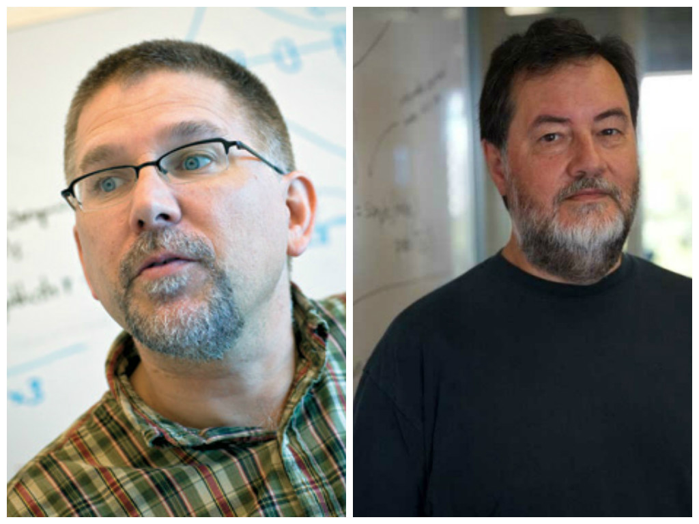
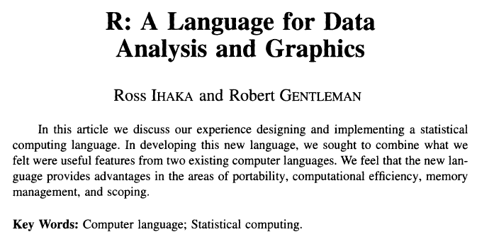
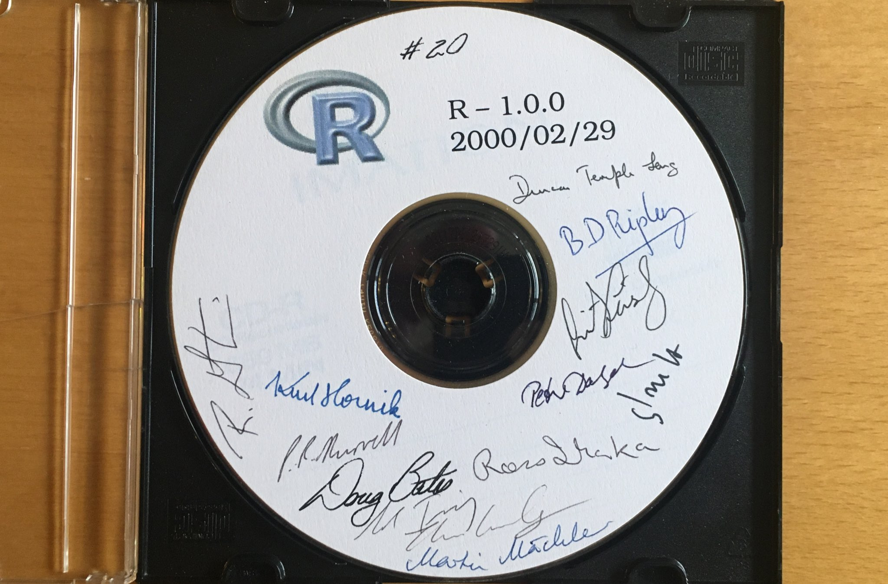
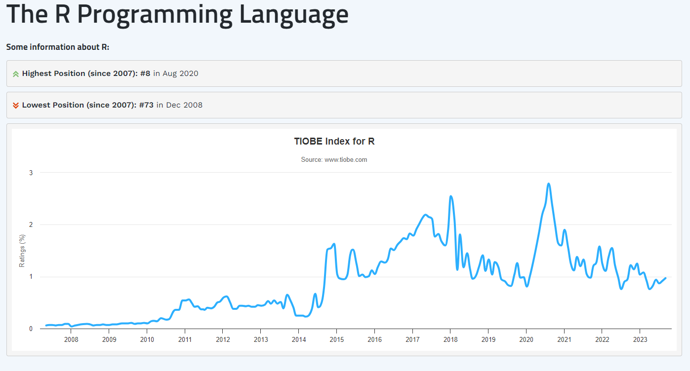
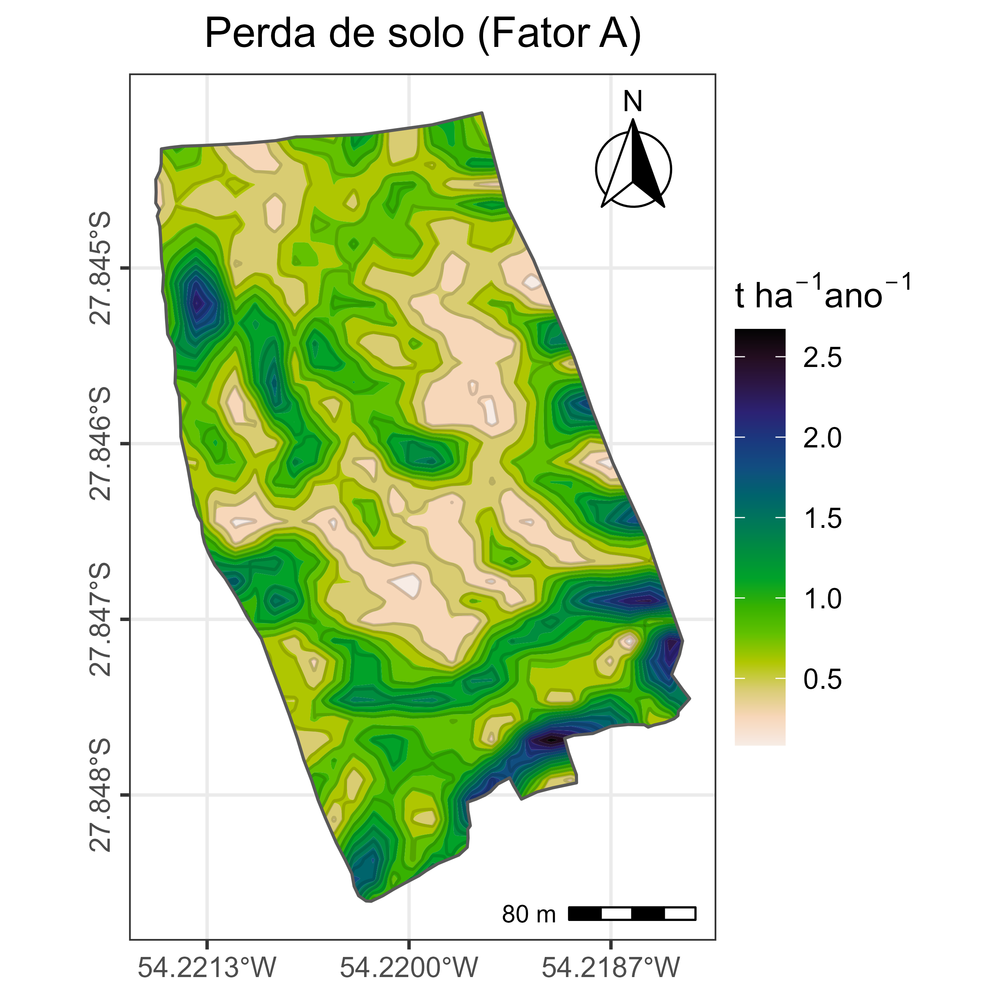

| Soil Taxonomy | |||
| order | suborder | greatgroup | subgroup |
|---|---|---|---|
| oxisols | aquox | acraquox | plinthic acraquox |
| oxisols | aquox | acraquox | aeric acraquox |
| oxisols | aquox | acraquox | typic acraquox |
| oxisols | aquox | plinthaquox | aeric plinthaquox |
| oxisols | aquox | plinthaquox | typic plinthaquox |
| oxisols | aquox | eutraquox | histic eutraquox |
| oxisols | aquox | eutraquox | plinthic eutraquox |
| oxisols | aquox | eutraquox | aeric eutraquox |
| oxisols | aquox | eutraquox | humic eutraquox |
| oxisols | aquox | eutraquox | typic eutraquox |
| Dados do pacote {SoilTaxonomy} | |||
Introdução à linguagem de programação R para estudos em Ciência do solo
Programa de Pós-Graduação em Ciência do Solo - UFRGS
Gustavo Frosi
Doutorando em Ciência do Solo - UFRGS
2023-10-19
O que é o R?
É uma linguagem e ambiente para computação estatística e gráficos. É um software livre e de código aberto (open source).
-The R Foundation link
R era uma linguagem de programação que foi projetada especificamente para as necessidades de estatística e análise de dados
-Hadley Wickham link
Não é um programa “comum”!


A linguagem de programação R
R é uma linguagem de alto nível (mais próxima).


Origem da linguagem R
O R foi desenvolvido pelos estatísticos Robert Gentleman e Ross Ihaka na Universidade de Auckland na Nova Zelândia no início da década de 1990.
Inspirada na linguagem S
A, B, C, D… R,S

Origem da linguagem R
 Ihaka 1996

Linha do tempo

Popularidade do R
 Rank TIOBE
Usar ou não usar R?
Vantagens 👍
- Open-source;
- Feito para análise estatística;
- Muitas possibilidades de análises;
- Rapidez e flexibilidade;
- Comunidade ativa;
- Popular no meio acadêmico;
Desvantagens 👎
Interface pouco “amigável”;
Requer maior conhecimento;
Consumo de memória do equipamento;
Usar ou não usar R?

www.kolabtree.com
Igualdade!
O R, entre outras linguagens open-source, é responsável por permitir que países em desenvolvimento tenham à disposição ferramentas sofisticadas para a realização de análises.
Igualdade (2017 vs 2019)
Aplicações do R
Geral
This is R. There is no if. Only how.
Esse é o R. Não há se. Apenas como.
-Simon Blomberg
Geral
📒 Pesquisas acadêmicas:
💵 Finanças:
💻 Comércio eletrônico:
📲 Mídias sociais:
🏦 Bancos:
🩺 Assistência médica:
⚒️ Indústria:
🏛 Governo:
📟 Setor de TI:
✅Análise estatística;
✅Análise de risco;
✅Recomendação de produtos;
✅Análise de interação de pessoas;
✅Risco de crédito/Hipoteca;
✅Análise de medicamentos;
✅Estratégia de negócio (demanda);
✅Análise de saúde pública;
✅Criação de produtos;
Aplicações em Ciência do Solo
- Organização de dados;
- Limpeza;
- Tratamento;
- Modificação.
- Visualização de dados;
- Gráficos;
- Tabelas;
- Fluxogramas;
- Estatística básica;
- Estatística descritiva;
- Estatística inferencial;
- Testes de hipóteses;
- Regressões;
- Modelos mistos;
- SEM;
- Aprendizado de máquina;
- Reprodução;
- Relatório;
- Apresentação;
- Website;
- Livro;
- Doc. Interativo.
Gênese e classificação do solo
Dicionário das classes de solo {SoilTaxonomy}
Soil Taxonomy
|--oxisols
|--aquox
| |--acraquox
| | |--plinthic acraquox
| | |--aeric acraquox
| | |--typic acraquox
| |--plinthaquox
| | |--aeric plinthaquox
| | |--typic plinthaquox
| |--eutraquox
| | |--histic eutraquox
| | |--plinthic eutraquox
| | |--aeric eutraquox
| | |--humic eutraquox
| | |--typic eutraquox
| |--haplaquox
| |--histic haplaquox
| |--plinthic haplaquox
| |--aeric haplaquox
| |--humic haplaquox
| |--typic haplaquox
|--torrox
| |--acrotorrox
| | |--petroferric acrotorrox
| | |--lithic acrotorrox
| | |--typic acrotorrox
| |--eutrotorrox
| | |--petroferric eutrotorrox
| | |--lithic eutrotorrox
| | |--typic eutrotorrox
| |--haplotorrox
| |--petroferric haplotorrox
| |--lithic haplotorrox
| |--typic haplotorrox
|--ustox
| |--sombriustox
| | |--petroferric sombriustox
| | |--lithic sombriustox
| | |--humic sombriustox
| | |--typic sombriustox
| |--acrustox
| | |--aquic petroferric acrustox
| | |--petroferric acrustox
| | |--aquic lithic acrustox
| | |--lithic acrustox
| | |--anionic aquic acrustox
| | |--anionic acrustox
| | |--plinthic acrustox
| | |--aquic acrustox
| | |--eutric acrustox
| | |--humic rhodic acrustox
| | |--humic xanthic acrustox
| | |--humic acrustox
| | |--rhodic acrustox
| | |--xanthic acrustox
| | |--typic acrustox
| |--eutrustox
| | |--aquic petroferric eutrustox
| | |--petroferric eutrustox
| | |--aquic lithic eutrustox
| | |--lithic eutrustox
| | |--plinthaquic eutrustox
| | |--plinthic eutrustox
| | |--aquic eutrustox
| | |--kandiustalfic eutrustox
| | |--humic inceptic eutrustox
| | |--inceptic eutrustox
| | |--humic rhodic eutrustox
| | |--humic xanthic eutrustox
| | |--humic eutrustox
| | |--rhodic eutrustox
| | |--xanthic eutrustox
| | |--typic eutrustox
| |--kandiustox
| | |--aquic petroferric kandiustox
| | |--petroferric kandiustox
| | |--aquic lithic kandiustox
| | |--lithic kandiustox
| | |--plinthaquic kandiustox
| | |--plinthic kandiustox
| | |--aquic kandiustox
| | |--humic rhodic kandiustox
| | |--humic xanthic kandiustox
| | |--humic kandiustox
| | |--rhodic kandiustox
| | |--xanthic kandiustox
| | |--typic kandiustox
| |--haplustox
| |--aquic petroferric haplustox
| |--petroferric haplustox
| |--aquic lithic haplustox
| |--lithic haplustox
| |--plinthaquic haplustox
| |--plinthic haplustox
| |--aqueptic haplustox
| |--aquic haplustox
| |--oxyaquic haplustox
| |--inceptic haplustox
| |--humic rhodic haplustox
| |--humic xanthic haplustox
| |--humic haplustox
| |--rhodic haplustox
| |--xanthic haplustox
| |--typic haplustox
|--perox
| |--sombriperox
| | |--petroferric sombriperox
| | |--lithic sombriperox
| | |--humic sombriperox
| | |--typic sombriperox
| |--acroperox
| | |--aquic petroferric acroperox
| | |--petroferric acroperox
| | |--aquic lithic acroperox
| | |--lithic acroperox
| | |--anionic acroperox
| | |--plinthic acroperox
| | |--aquic acroperox
| | |--humic rhodic acroperox
| | |--humic xanthic acroperox
| | |--humic acroperox
| | |--rhodic acroperox
| | |--xanthic acroperox
| | |--typic acroperox
| |--eutroperox
| | |--aquic petroferric eutroperox
| | |--petroferric eutroperox
| | |--aquic lithic eutroperox
| | |--lithic eutroperox
| | |--plinthaquic eutroperox
| | |--plinthic eutroperox
| | |--aquic eutroperox
| | |--kandiudalfic eutroperox
| | |--humic inceptic eutroperox
| | |--inceptic eutroperox
| | |--humic rhodic eutroperox
| | |--humic xanthic eutroperox
| | |--humic eutroperox
| | |--rhodic eutroperox
| | |--xanthic eutroperox
| | |--typic eutroperox
| |--kandiperox
| | |--aquic petroferric kandiperox
| | |--petroferric kandiperox
| | |--aquic lithic kandiperox
| | |--lithic kandiperox
| | |--plinthaquic kandiperox
| | |--plinthic kandiperox
| | |--aquic kandiperox
| | |--andic kandiperox
| | |--humic rhodic kandiperox
| | |--humic xanthic kandiperox
| | |--humic kandiperox
| | |--rhodic kandiperox
| | |--xanthic kandiperox
| | |--typic kandiperox
| |--haploperox
| |--aquic petroferric haploperox
| |--petroferric haploperox
| |--aquic lithic haploperox
| |--lithic haploperox
| |--plinthaquic haploperox
| |--plinthic haploperox
| |--aquic haploperox
| |--andic haploperox
| |--humic rhodic haploperox
| |--humic xanthic haploperox
| |--humic haploperox
| |--rhodic haploperox
| |--xanthic haploperox
| |--typic haploperox
|--udox
|--sombriudox
| |--petroferric sombriudox
| |--lithic sombriudox
| |--humic sombriudox
| |--typic sombriudox
|--acrudox
| |--aquic petroferric acrudox
| |--petroferric acrudox
| |--aquic lithic acrudox
| |--lithic acrudox
| |--anionic aquic acrudox
| |--anionic acrudox
| |--plinthic acrudox
| |--aquic acrudox
| |--eutric acrudox
| |--humic rhodic acrudox
| |--humic xanthic acrudox
| |--humic acrudox
| |--rhodic acrudox
| |--xanthic acrudox
| |--typic acrudox
|--eutrudox
| |--aquic petroferric eutrudox
| |--petroferric eutrudox
| |--aquic lithic eutrudox
| |--lithic eutrudox
| |--plinthaquic eutrudox
| |--plinthic eutrudox
| |--aquic eutrudox
| |--kandiudalfic eutrudox
| |--humic inceptic eutrudox
| |--inceptic eutrudox
| |--humic rhodic eutrudox
| |--humic xanthic eutrudox
| |--humic eutrudox
| |--rhodic eutrudox
| |--xanthic eutrudox
| |--typic eutrudox
|--kandiudox
| |--aquic petroferric kandiudox
| |--petroferric kandiudox
| |--aquic lithic kandiudox
| |--lithic kandiudox
| |--plinthaquic kandiudox
| |--plinthic kandiudox
| |--aquic kandiudox
| |--andic kandiudox
| |--humic rhodic kandiudox
| |--humic xanthic kandiudox
| |--humic kandiudox
| |--rhodic kandiudox
| |--xanthic kandiudox
| |--typic kandiudox
|--hapludox
|--aquic petroferric hapludox
|--petroferric hapludox
|--aquic lithic hapludox
|--lithic hapludox
|--plinthaquic hapludox
|--plinthic hapludox
|--aquic hapludox
|--inceptic hapludox
|--andic hapludox
|--humic rhodic hapludox
|--humic xanthic hapludox
|--humic hapludox
|--rhodic hapludox
|--xanthic hapludox
|--typic hapludox Gênese e classificação do solo
Textura {soiltextur}

Gênese e classificação do solo
Perfil {soilDB} {aqp}

Mineralogia do solo
Identificação mineral {powdR}
-Aligning sample to the internal standard
-Interpolating library to same 2theta scale as aligned sample
-Optimising...
-Removing negative coefficients and reoptimising...
-Computing phase concentrations
-Internal standard concentration unknown. Assuming phases sum to 100 %
***Full pattern summation complete*** phase_name phase_percent
1 Quartz 53.6918
2 K-feldspar 1.3184
3 Plagioclase 1.1637
4 Illite 1.3515
5 Kaolinite 1.3697
6 Organic-Matter 41.1049
Química do solo
modelos {stats}
| Estatística para o modelo de Langmuir | ||||
| term | estimate | std.error | statistic | p.value |
|---|---|---|---|---|
| k | 0.09726451 | 0.01699736 | 5.72233 | 4.615689e-03 |
| admax | 38.39329412 | 1.71403985 | 22.39930 | 2.352148e-05 |

Química do solo
Carbono orgânico e nutrientes disponíveis {SoilTesting}
library(SoilTesting)
with(data = df_Available_K[1:5, ], Available_K(
W = Mass_Soil,
VE = Vol_Extractant,
VA = Vol_Aliquot,
VF = Vol_Final,
FR = Flame_Reading
))$K_mgkg
[1] 25.0 20.0 22.5 31.0 60.0
$K_kgha
[1] 56.00 44.80 50.40 69.44 134.40
$K_cmolckg
[1] 0.06410256 0.05128205 0.05769231 0.07948718 0.15384615
$K2O_mgkg
[1] 30.1150 24.0920 27.1035 37.3426 72.2760
$K2O_kgha
[1] 67.45760 53.96608 60.71184 83.64742 161.89824
$K2O_cmolckg
[1] 0.07721795 0.06177436 0.06949615 0.09575026 0.18532308Física do solo
Intervalo hídrico ótimo {soilphysics}

Fertilidade do solo
Correlação e calibração {soiltestcorr}

Microbiologia do solo
Curva de crescimento microbiano {growthcurver}
Fit data to K / (1 + ((K - N0) / N0) * exp(-r * t)):
K N0 r
val: 0.336 0 1.119
Residual standard error: 0.004685978 on 142 degrees of freedom
Other useful metrics:
DT 1 / DT auc_l auc_e
0.62 1.6e+00 5.11 5.15
Carbono e MOS
Modelos de decomposição da MOS {SoilR}

Uso do modelo Century
Geoprocessamento


Lógica de programação
Lógica de programação
A solução de um determinado problema requer uma sequência de passo lógicos. A isso chamamos de algoritmo.
O algoritmo é um conjunto de regras e passos definidos de forma clara e precisa, para que o problema seja resolvido.
Antes de qualquer escrita de códigos deve ser realizado um algoritmo. A linguagem de programação será o meio onde nosso algoritmo será colocado em prática.
Lógica de programação
flowchart TB
A[Entrada]
A-->B[/Nota 1/]
B-->C[/Nota 2/]
C-->D[Média das notas]
D-->E{Média >= 7}
E-->|Sim| F[Aprovado]
E-->|Não| G[Reprovado]
Fechamento aula 1
Materiais extra
R for Data Science 2e - Hadley Wickham
Ciência de Dados em R - Curso-R
Wiki R - UFRGS
Software R para avaliação de dados experimentais - Tiago Olivoto
Manual de Planejamento e Análise de Experimentos com R Walmes Marques Zeviani
Instalação dos softwares
R - link
RStudio - link
Rtools - link